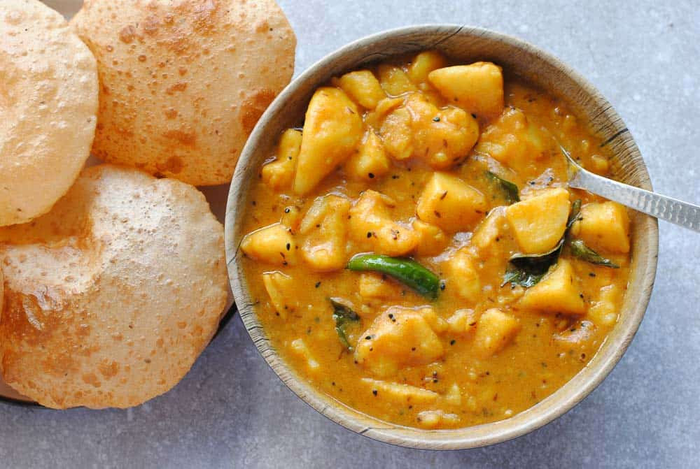

curry:-

Description
Cooking Time:-
Preperation Time: 45 Min Cook Time: 20 Min Total Time: 15 Min
Ingrediants:-
Pizza Crust 1
Mushrooms (sliced) 12-15 pcs
Cheddar Cheese 1.5Cup (grated)
Tomatoes 1 Cup
Mozzarella Cheese 1 Cup (grated)
Pineapple 1/2 Cup
Tomato Garlic Sauce ½ Pint
Tri color bell Pepper ½ Cup each
Onions 2
Olives 2 tbsp chopped
Pizza sauce 2 tbsp
Directions
Preheat oven at 350°F.
Spread pizza dough on to a pizza Baking tray.( I have used homemade pizza crust).
Crust: 1 cup of All purpose flour, 2 tbsp of powdered milk and 1 tsp of salt. Knead it with proved yeast ( 1 tsp of yeast in 1/4 cup of warm water and 1 tsp of sugar).
Spread the Tomato & Garlic Sauce on the top of the dough. Add Tomatoes Tri color bell pepper, pineapple, mushrooms, green pepper, mozzarella cheese and cheddar cheese.
Bake it for 30 minutes. Take it out and cut into slices after 5 minutes.
Serve with chilli flakes, tomato ketchup, Ranch or cheese dip. My Tip: Pizza crust must be fresh. Secret ingredient is my homemade pasta sauce .